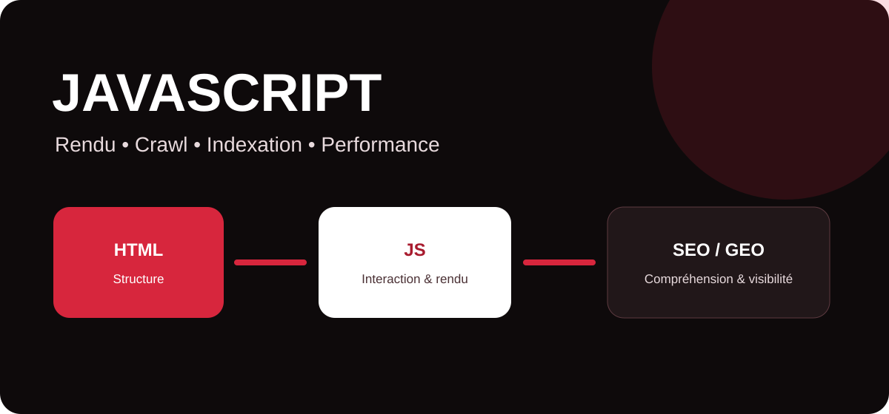

JavaScript est omniprésent sur le web : menus, formulaires, filtres, applications, contenus dynamiques, outils interactifs et interfaces modernes en dépendent souvent. Pour une stratégie SEO et GEO, il faut comprendre la différence entre ce que reçoit immédiatement un robot dans le HTML et ce qui apparaît après l’exécution du JavaScript.

Javascript
JavaScript est un langage de programmation principalement utilisé pour rendre les pages web interactives et modifier leur contenu ou leur comportement dans le navigateur. Avec HTML, qui structure l’information, et CSS, qui gère sa présentation, il constitue l’un des piliers techniques du web moderne.
Il permet par exemple d’ouvrir un menu, charger des résultats sans recharger une page, valider un formulaire, afficher une carte, personnaliser une interface ou construire une application web complète. Les frameworks tels que React, Vue ou Angular reposent largement sur JavaScript pour produire des expériences riches.
JavaScript est-il compatible avec le SEO ?
Oui. Google rend JavaScript depuis plusieurs années. Une page qui utilise JavaScript n’est donc pas automatiquement défavorable au référencement. La question importante est plutôt : Google peut-il découvrir, rendre, comprendre et indexer les informations essentielles de la page ?
Dans un parcours simplifié, Googlebot récupère d’abord la ressource, analyse ce qui est immédiatement disponible puis peut envoyer la page au rendu afin d’exécuter JavaScript. Une implémentation robuste évite donc de dépendre inutilement de scripts fragiles pour les éléments critiques.
Quels éléments SEO faut-il surveiller ?
| Élément | Risque potentiel | Bonne pratique |
|---|---|---|
| Contenu principal | Texte absent en cas d’échec du script. | Rendre le contenu essentiel de manière fiable et vérifiable. |
| Liens internes | Navigation difficile à découvrir si elle ne repose pas sur de vrais liens. | Utiliser des liens HTML avec des URL accessibles pour les destinations importantes. |
| Canonical / robots | Instructions contradictoires avant et après rendu. | Conserver des signaux cohérents et éviter de modifier inutilement les directives critiques. |
| Performance | Scripts lourds, interaction lente, rendu retardé. | Réduire, fractionner et différer les scripts non essentiels. |
| Données structurées | Markup absent ou incohérent. | Tester le résultat final rendu et maintenir les données conformes au contenu visible. |
JavaScript et performances : quel impact ?
Un volume important de JavaScript peut mobiliser le processeur du navigateur, retarder l’affichage ou ralentir les interactions. Cela peut affecter l’expérience utilisateur et certaines métriques Core Web Vitals. L’objectif n’est pas de supprimer tous les scripts, mais de charger uniquement ce qui apporte une valeur réelle, au bon moment.
Les équipes peuvent notamment supprimer les dépendances inutiles, fractionner les bundles, différer les scripts secondaires, optimiser les composants tiers et contrôler les performances sur de vrais appareils mobiles. Le suivi doit porter sur l’expérience globale de la page plutôt que sur un score isolé.
Rendu côté client, SSR et génération statique
Une application peut construire une grande partie de son interface côté client, après chargement dans le navigateur. À l’inverse, le rendu côté serveur (SSR) prépare le HTML sur le serveur avant de l’envoyer, tandis que la génération statique produit à l’avance des pages HTML. Les architectures hybrides combinent aujourd’hui fréquemment ces approches.
Pour le SEO, le choix dépend du projet. Lorsque des pages stratégiques doivent être immédiatement accessibles, stables et rapides, fournir un HTML utile dès la réponse initiale peut simplifier le crawl et améliorer la résilience. Le JavaScript peut ensuite enrichir l’interface.
JavaScript, canonical et indexation
Les signaux de canonicalisation doivent rester cohérents. Modifier dynamiquement une balise canonical avec JavaScript peut créer de l’ambiguïté si l’HTML initial indique une URL différente. De même, placer noindex dans le code initial en espérant le retirer ensuite par JavaScript est une stratégie fragile.
Pour les liens importants, une structure HTML explicite comme celle-ci offre une destination claire à l’utilisateur comme aux moteurs.
Quel lien entre JavaScript et GEO ?
Le GEO vise à rendre l’information d’une marque compréhensible, fiable et exploitable dans les environnements de recherche générative. Une architecture JavaScript trop dépendante d’interactions complexes peut compliquer l’accès à certaines informations pour des systèmes automatisés. Les informations stratégiques — expertise, services, entités, preuves, réponses clés — gagnent donc à être présentes dans un contenu public, structuré et directement accessible.
Autrement dit, l’innovation front-end et la lisibilité machine ne sont pas opposées. Une bonne architecture peut proposer une expérience dynamique aux visiteurs tout en exposant clairement le sens, la hiérarchie et les contenus importants.
JavaScript : les bonnes pratiques SEO à retenir
JavaScript est un outil puissant, mais sa valeur dépend de son implémentation. Pour un site orienté acquisition, les priorités sont simples : préserver l’accès au contenu essentiel, proposer des liens internes découvrables, maintenir des signaux techniques cohérents, limiter le poids des scripts et tester la page telle qu’elle est réellement rendue.
MinoSeo, agence SEO/GEO depuis plus de 15 ans, accompagne les entreprises dans l’audit technique, l’indexation, l’architecture de contenu et l’identification des freins pouvant limiter la visibilité de sites modernes utilisant JavaScript.
Votre JavaScript freine-t-il votre visibilité ?
Faites analyser le rendu, l’indexation, le maillage interne et les performances de vos pages stratégiques.
Demander un audit gratuit